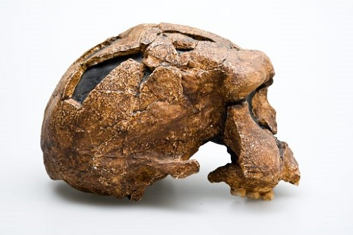
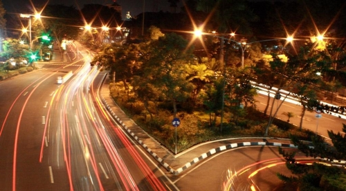

Era Prasejarah

Sejak abad ke-19 bahkan hingga sekarang, banyak peninggalan pra sejarah Jawa Timur yang ditemukan. Tahun 1891, sebuah tim di bawah pimpinan seorang peneliti asal Belanda bernama Eugene Dubois telah menemukan fosil manusa purba di Trinil, Kabupaten Ngawi, Jawa Timur. Fosil manusia purba temuan tim Eugene Dubois ini kemudian diketahui berjenis Pithecanthropus Erectus.
Tak hanya itu, pada tahun 1934, tim ekspedisi yang dipimpin oleh GHR von Koenigswald juga menemukan fosil-fosil manusia purba Homo Erectus yang ditemukan di sepanjang Bengawan Solo hingga di tepi Sungai Brantas, Mojokerto Jawa Timur. Menurut dugaan para ahli, telah berusia kurang lebih 1.000.000 tahun.
Di sepanjang abad ke-20 masih ditemukan berbagai peninggalan pra sejarah Jawa Timur bahkan hingga saat ini. Tahun 1993, ditemukan sejumlah peralatan purba di sekitar Malang. Tahun 2002, di kawasan Teluk Pacitan ditemukan fosil manusia purba yang masih utuh beserta sejumlah perkakas kuno yang menyertainya. Terakhir, batu dolmen dan lumpang juga ditemukan di Malang pada tahun 2013.
Era Klasik

Akar peradaban Jawa Klasik berawal dari Kerajaan Tarumanegara di Jawa Barat (4Ms) dan Kerajaan Kanjuruhan (6Ms) di Jawa Timur. Dua kerajaan tertua di Jawa ini selanjutnya diikuti oleh lahirnya sebuah kerajaan besar yaitu Kerajaan Mataram Kuno (Wangsa Syailendra dan Sanjaya) di Jawa Tengah (8Ms), lambat laun Peradaban “tengah” pun berpindah ke “timur” menjadi Kerajaan Medang (10Ms) yang dipimpin oleh Mpu Sindok. Era ini telah menjadi titik balik bangkitnya kerajaan-kerajaan Jawa Timur, yaitu Kadiri dan Jenggala (11Ms), Singhasari hingga Majapahit (13Ms) sampai pada akhirnya peradaban Islam pun datang mengantikan kerajaan bercorak Buddha Hindu tersebut.
Era Kolonial
Dari Kedatangan Portugis sampai pendudukan jepang di Jawa Timur, telah banyak memicu Perang antar Masyarakat melawan pihak Penjajah, dari Perang Diponegoro (Perang Jawa) sampai Pemberontakan 10 November telah terjadi dan tidak sedikit Korban yang berjatuhan.
Era Kini

Kini di Jaman Globalisasi semakin banyak daerah Industri yang tumbuh di Jawa Timur, Kemudahan Investasi serta Birokrasi yang tidak rumit mampu menciptakan lapangan Pekerjaan, Hingga akhirnya wilayah Jawa Timur ditetapkan sebagai Pusat Perdagangan untuk wilayah Indonesia Timur oleh Pemerintah Indonesia.